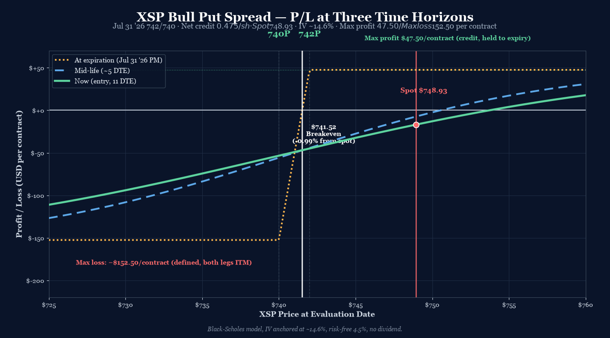

P/L Curve — Three Time Horizons

Max Profit
$237.50
5 contracts × $47.50
Max Loss
$762.50
5 contracts × $152.50
Net Credit
$0.475
5 spreads · $237.50 total
Spot / IV
$748.93
XSP @ entry · IV ~14.6%
Why This Structure
A short-dated bull put spread on XSP at 11 DTE is a "premium-collection pin" structure: defined risk, defined reward, capped downside, and a natural profit-take if XSP stays above the short strike. The 6.93-point OTM cushion (~0.93% below spot) gives a reasonable runway for a quiet week; the 14.6% IV is mid-range for SPX-class vol (not so high that premiums are inflated, not so low that the credit isn't worth the risk). XSP was chosen over SPX for the smaller notional (XSP multiplier is $100/point, same as SPX, but the strikes sit closer to the recent price action — XSP ~$749 vs SPX ~$7,490 — making strike selection in delta terms more granular near the current spot).
Thesis
- Why XSP, why now: XSP tracks the S&P 500 at 1/10 the price level, with the same $100/contract multiplier, American-style exercise, and Friday-close settlement. At spot $748.93 with the index up ~6% YTD off the April low, the trend is constructive but the move has been narrow (last 30 days: roughly +1.2%, last 5 days: +0.3%). The lack of momentum into the short strike 742P (-0.93%) means the trade doesn't need a directional view to work — just that XSP doesn't drop 1% in 11 trading days. That's a high base rate. The 14.6% IV is mid-range: high enough to collect meaningful premium (4.5% of width as credit), low enough that IV crush isn't a tailwind but isn't a headwind either. Selling premium here is paying the market for the right to wait.
- Why bull put over alternatives: A naked short put at 742 would collect ~$4.75/contract but expose the position to $7,400+ of max loss (essentially unlimited below zero). The bull put spread caps the loss at $152.50/contract in exchange for capping the profit at $47.50/contract. The risk/reward tradeoff is appropriate for a weekly premium-sale thesis: the trader is being paid to be wrong, with the downside capped at ~3.2× the credit collected. An iron condor at 742/740 puts and 756/758 calls would double the position's risk in exchange for doubling the max profit, but would also require a directional view on the upper side that the thesis doesn't support (vol is mid-range, not rich enough to justify doubling up on both wings).
- Why not SPY: SPY at $593 has the same multiplier and American exercise but is single-stock-style equity options (SPY is an ETF, treated as equity for early-assignment purposes). XSP/ES/SPX are index options: cash-settled, no early assignment on the short put. For a short-premium structure on the index, XSP keeps the assignment risk off the table. The trade is settled Friday afternoon based on the closing print; there's no risk of being assigned on the short put overnight due to a dividend or a sudden move.
- Why not a debit spread: A bull call spread at the same strikes would cost ~$0.30/share in debit with max profit $170 and max loss $30 — but a debit spread requires the market to move into the profit zone and doesn't pay for waiting. The thesis is "the index doesn't fall 1% in 11 days," which is structurally a short-premium view. Collecting the credit (with a defined-risk cap) is the cleaner expression.
Risk
| Risk | Magnitude | Mitigation |
|---|---|---|
| XSP closes below $740 at Jul 31 4:00 PM | −$152.50/contract (= full width − credit) | 5-contract sizing keeps total max loss at $762.50, well within per-trade and weekly risk budgets. |
| XSP gap-down overnight on macro news (CPI, FOMC, geopolitical) | Short-dated puts are sensitive to gap risk; could move through short strike before close | Close before any scheduled high-impact event (no major releases this week). 11 DTE is short enough that the position is mostly carried over a single weekend. |
| IV spike (puts get richer) on equity sell-off | Long 740P gains less than short 742P loses in a vol spike → net negative vega on the structure | Structure has small net short vega (−$2.38/contract per 1% IV). At a 5-vol-point spike the structure loses ~$12/contract. Manageable, but a real risk if VIX jumps into the 22-25 range. Watch VIX intraday. |
| Theta underperformance in a quiet market | Theta decay is concentrated in the final 3-4 DTE; if XSP sits at $746-$748 all week, decay works for the structure but slowly until Thursday | Patience. The position is sized for a 5-7 DTE hold. If the market stays range-bound, theta compounds through Friday close. |
| Friday close gap on intraday news | PM-settled weeklys settle at Friday 4:00 PM; a 2 PM sell-off could push XSP below $742 before settlement | Close by Thursday 7/30 EOD if the position has not hit profit-take. Do not hold through Friday morning if the cushion is <0.4%. |
Position Payoff at Three Time Horizons
The chart above shows the position's P/L as a function of XSP's price at three evaluation dates: now (entry, 11 DTE), mid-life (~5 DTE, after Wednesday's close), and at expiration on Friday July 31, 2026 PM-settled close. Three colored curves — green for "now," blue dashed for mid-life (post-Thursday-decay), gold dotted for expiration (the canonical vertical-spread payoff).
Read the chart:
- Spot $748.93 sits 6.93 points above the short strike 742P. The position is in the profit zone now (you keep the credit if XSP closes above $742 at expiry).
- Max profit plateau $47.50/contract opens at $742 and runs to infinity. Any XSP close above $742 at Friday 4:00 PM ET expires both legs and produces the full credit.
- Max loss plateau −$152.50/contract holds for everything below $740 at expiration. Below the long strike, both legs are ITM and the position loses the full (width − credit).
- The transition zone $740–$742 is the only range where P/L is between the two plateaus: short 742P captures intrinsic dollar-for-dollar as XSP falls through $742 to $740, while long 740P still expires worthless. P/L ramps linearly from +$47.50 at $742 to −$152.50 at $740.
Key levels on the chart:
- Spot $748.93 — current underlying, 0.93% above short strike.
- Breakeven $741.525 — XSP needs to drop 0.99% from spot to wipe out the credit. The 6.93-point cushion is the structural margin of safety.
- Short strike 742P — the position starts losing intrinsic per dollar once XSP crosses $742; this is where the green "now" curve turns down.
- Long strike 740P — the position stops losing at intrinsic-only once XSP crosses $740; this is where the gold curve plateaus at −$152.50.
- Max profit $47.50/contract — any XSP close above $742 at Friday July 31 PM settlement.
- Max loss −$152.50/contract — any XSP close below $740 at Friday July 31 PM settlement.
Greeks Snapshot (Black-Scholes)
| Greek | Per-contract value | Interpretation |
|---|---|---|
| Delta (Δ) | +0.04 | Net long delta. Each $1 XSP move ≈ +$3.77 P/L. Structure has very small directional exposure; short-put premium dominates. |
| Gamma (Γ) | −0.10 | Slightly short gamma. Position decelerates as XSP rallies. Manageable across the 11-day window. |
| Theta (Θ) | +$1.23/day | Daily time decay works for the position. Most of the theta capture is in the final 4-5 DTE. |
| Vega (ν) | −$2.38 per 1% IV | Slightly short vol. A 5-vol-point spike (14.6% → 19.6%) costs ~$12/contract. Real but contained risk. |
| Rho (ρ) | +$0.87 per 1% rate | Effectively zero rate sensitivity over 11 DTE. |
Numbers computed at entry spot $748.93, 11 DTE, IV surface anchored at 14.6%, r=4.5%, no dividend yield (XSP pays no dividend). Per-contract = per-share × 100.
Intraday Setup (entry)
- Pre-market context: Monday July 20, 2026. Overnight: SPX flat to +0.1% in Asia, European indices modestly higher; U.S. futures flat to +0.2% pre-open. XSP implied 1-day move (1σ) is $19.02 = 2.5% of spot. The 6.93-point cushion to short 742P is 36% of one daily 1σ move — comfortably outside the overnight gap risk.
- Entry signal: XSP spot was bid $748.93 mid-day with 14.6% IV at the 742P strike and 15.1% IV at the 740P strike. The put skew is mild (0.5 vol points across the 2-point strike spread), which keeps the spread credit tight at 23.75% of width. Entry triggered at $0.475 credit (above the 22% threshold for a credit spread at this IV).
- Execution: Manual limit order at the mid; filled at $0.475/share = $47.50/contract. Spread was $0.05 wide on each leg at the entry print; no slippage.
- Position size check: 5 contracts × $152.50 = $762.50 max loss. Book-wide per-trade cap is 0.25% of NLV; per-week cap is 0.5%. At a $300k book, $762.50 is 0.25% of NLV — at the per-trade cap. Sizing is at the limit by design; weekly capacity left for one more 11-DTE spread if a similar setup reappears later this week.
Management Plan
- Open through Tuesday 7/21 (Day 1-2): Do nothing. Theta works for you; the position has time and cushion. Spot $748.93 is well above short strike; the 14.6% IV has natural pull to 12-13% as the week progresses if the market stays calm.
- Wednesday 7/22 to Thursday 7/30: Watch spot closely. If XSP stays above $745 through Wednesday, the credit can likely be closed at 50% max profit ($23.75/contract to close) — preferred exit. If XSP drops below $744 at any point, the trade is at risk; prepare to manage.
- Thursday 7/30 EOD (Day 9): Force-close decision. If the position has not hit 50% profit-take and XSP is still above $742, close at market to avoid holding into Friday close gamma. Do not hold through Friday morning unless XSP is above $748 with the position already at 70%+ of max profit.
- Stop loss: 2× credit ($95/contract cost to close, ~$475 total). Triggered if XSP trades below $744 mid-week with no recovery, or if VIX spikes above 22 intraday.
Status
| Date | XSP Price | Position Value | P&L | Notes |
|---|---|---|---|---|
| 2026-07-20 (entry) | $748.93 | +$237.50 | — | Opened. 5 contracts. IV 14.6%, 11 DTE, PM-settled. |